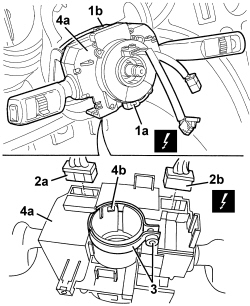

5550A10 STALK UNIT ASSEMBLY - R+R
- Path
- Procedures > 55 ELECTRICAL EQUIPMENT > 5550 WARNING AND MANOEUVRING INDICATORS > 5550A STALK UNIT > 5550A10 STALK UNIT ASSEMBLY - R+R
- Kind
- repair procedure (removal / refitting; the operation number is the code)
- Applies to
- all engines; all production periods
- Interactive page
- https://sloeber94.github.io/elrnDB-aBrrSpdr/en/#/946002417
Applies to: all engines; all production periods
 Removing
Removing
 Refitting
RefittingOp. 7040A26 STEERING COLUMN TRIM - R+R
Op. 5580C18 AIR BAG MODULE - R+R
Op. 4110A10 STEERING WHEEL - R+R FOR REPLACEMENT OR CHECKS

Applies to: all engines; all production periods
Applies to: all engines; all production periods
Refitting
RemovingOp. 4110A10 STEERING WHEEL - R+R FOR REPLACEMENT OR CHECKS
Topics linked from this page (6)
- 4110A10 STEERING WHEEL - R+R FOR REPLACEMENT OR CHECKS
- 5580C18 AIR BAG MODULE - R+R
- 7040A26 STEERING COLUMN TRIM - R+R
- D047 CLOCK SPRING COUPLING
- H005 STEERING COLUMN SWITCH UNIT
- K058 STEERING SENSOR
Topics that link to this page (63)
- I001 SIDE LIGHTS/NO. PLATE LIGHTS NOT WORKING
- I004 SIDE LIGHTS / NUMBER PLATE LIGHT AND DIPPED BEAMS DO NOT WORK IN AUTO MODE
- I006 MAIN BEAM HEADLAMPS NOT WORKING
- I008 SIDE LIGHTS NOT WORKING
- J001 WINDSCREEN/REARSCREEN WASHERS NOT WORKING
- J002 WINDSCREEN WIPERS NOT WORKING
- J004 BACK WINDOW WIPER NOT WORKING
- K015 CLOCK NOT WORKING
- K141 MODE BUTTON NOT WORKING
- N020 HORNS NOT WORKING
- N023 HORNS WORKING ENDLESSLY
- 5540BA DIPPED BEAM CIRCUIT CHECK
- 5540BA DIPPED BEAM CIRCUIT CHECK
- 5010B24 UNDER-FACIA AIR DUCTS - R.R.
- 5040C10 AIR CONDITIONING CASING - R.R
- 5040C50 AIR CONDITIONING HEATER RADIATOR - R.R.
- 5040C64 A/C EVAPORATOR - R+R
- 5040D80 AIR CONDITIONING SYSTEM CABLE LOOM - R.R. OR REPLACE
- 5040D86 AIR CONDITIONING RIGHT AIR MIXTURE FLAP CONTROL MOTOR - R.R
- 5040D94 AIR CONDITIONING LEFT UPPER AIR DISTRIBUTION FLAP MOTOR (DEFROST) - R.R
- 5040D96 AIR CONDITIONING RIGHT UPPER DISTRIBUTION FLAP MOTOR (DEFROST) - R.R
- 5505C31 BUILT-IN WIRING UNDER DASHBOARD - R.R.
- 5580A10 CRUISE CONTROL LEVER ASSEMBLY - R+R
- 5580C12 CLOCK SPRING FOR AIR BAG MODULE ON STEERING WHEEL - R.R
- 5580C22 AIR BAG MODULE - PASSENGER SIDE - R.R
- 5580C24 PASSENGER SIDE AIR BAG MODULE SUPPORT R. R.
- 7040A10 DASHBOARD TRIM - R+R
- 7040A36 STEERING COLUMN FLEXIBLE TRIM - R.R.
- 7210A74 R R FACIA SUPPORT BEAM
- E1050 CAN CONNECTION LINES - WIRING DIAGRAM
- E1050 CAN CONNECTION LINES - COMPONENT LOCATION
- E1050 CAN CONNECTION LINES - WIRING DIAGRAM
- E1050 CAN CONNECTION LINES - COMPONENT LOCATION
- E1060 A-BUS SERIAL LINE - WIRING DIAGRAM
- E1060 A-BUS SERIAL LINE - COMPONENT LOCATION
- E2010 SIDE LIGHTS/NUMBER PLATE LIGHT - WIRING DIAGRAM
- E2010 SIDE LIGHTS/NUMBER PLATE LIGHT - COMPONENT LOCATION
- E2010 SIDE LIGHTS/NUMBER PLATE LIGHT - WIRING DIAGRAM
- E2010 SIDE LIGHTS/NUMBER PLATE LIGHT - COMPONENT LOCATION
- E2011 DIPPED HEADLIGHTS - WIRING DIAGRAM
- E2011 DIPPED HEADLIGHTS - COMPONENT LOCATION
- E2011 DIPPED HEADLIGHTS - WIRING DIAGRAM
- E2011 DIPPED HEADLIGHTS - COMPONENT LOCATION
- E2012 MAIN BEAM HEADLIGHTS - WIRING DIAGRAM
- E2012 MAIN BEAM HEADLIGHTS - COMPONENT LOCATION
- E2012 MAIN BEAM HEADLIGHTS - WIRING DIAGRAM
- E2012 MAIN BEAM HEADLIGHTS - COMPONENT LOCATION
- E2020 DIRECTION INDICATORS/HAZARD WARNING LIGHTS - WIRING DIAGRAM
- E2020 DIRECTION INDICATORS/HAZARD WARNING LIGHTS - COMPONENT LOCATION
- E2020 DIRECTION INDICATORS/HAZARD WARNING LIGHTS - WIRING DIAGRAM
- E2020 DIRECTION INDICATORS/HAZARD WARNING LIGHTS - COMPONENT LOCATION
- E2535 CONTROLS LIGHTING - WIRING DIAGRAM
- E2535 CONTROLS LIGHTING - COMPONENT LOCATION
- E3020 WINDSCREEN WASH/WIPE - WIRING DIAGRAM
- E3020 WINDSCREEN WASH/WIPE - COMPONENT LOCATION
- E3021 REARSCREEN WASH/WIPE WIRING DIAGRAM
- E3021 REARSCREEN WASH/WIPE COMPONENT LOCATION
- E3022 HEADLAMP WASHER - WIRING DIAGRAM
- E3022 HEADLAMP WASHER - COMPONENT LOCATION
- E4080 TRIP COMPUTER - WIRING DIAGRAM
- E4080 TRIP COMPUTER - COMPONENT LOCATION
- E7022 VDC - WIRING DIAGRAM
- E7022 VDC - COMPONENT LOCATION